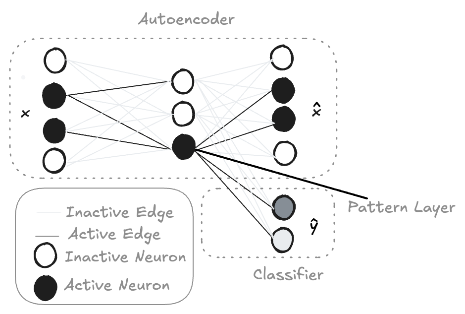

Artigo 3: Interpretable Patterns from Neural Networks: Creating Meaning from Complex Data
1 Introdução
O machine learning (aprendizado de máquina) tem permitido avanços incríveis, indo do diagnóstico de câncer à detecção de fraudes. Porém, muitos desses modelos entregam respostas sem explicações. Foi para resolver esse problema que surgiu o DiffNaps.
Baseado no artigo “Finding Interpretable Class-Specific Patterns Through Efficient Neural Search”, o DiffNaps é uma arquitetura de rede neural criada para extrair padrões específicos de cada classe, legíveis por humanos, mesmo em bases de dados muito grandes, como dados genômicos.
1.1 Por que modelos interpretáveis?
Imagine por um momento que você tem um conjunto de dados massivo — por exemplo, dados de expressão gênica para diferentes tipos de câncer. O objetivo é identificar padrões específicos dentro desses dados que separem claramente um tipo de câncer do outro, de uma forma que seja facilmente compreendida por especialistas da área, como biólogos. Ou seja, não se trata apenas de obter uma classificação precisa, mas também de entender por que essa classificação foi feita.
Muitos modelos de aprendizado de máquina são excelentes em prever, mas seus processos de tomada de decisão costumam ser opacos. Este artigo é um estudo que enfatiza ambos os aspectos: ele prioriza a interpretabilidade. Os autores argumentam que, em campos como a biologia, entender os padrões subjacentes é crucial para o desenvolvimento de novos tratamentos e terapias.
2 Como o DiffNaps Funciona
DiffNaps, abreviação de Differential Pattern Finding Neural Architecture for Pattern Search (Arquitetura Neural de Busca de Padrões Diferenciais). É uma rede neural binária, o que significa que utiliza pesos e ativações binários, 0 ou 1. Isso torna os padrões aprendidos diretamente interpretáveis. É um autocodificador binário de duas camadas combinado com uma classificação head. O autocodificador reconstrói os dados de entrada, enquanto a classificação head garante que os padrões aprendidos sejam discriminativos entre as classes.
O autocodificador aprende a compactar os dados em uma representação de menor dimensão, o gargalo, e então os reconstrói. No DiffNaps, essa camada de gargalo representa os padrões aprendidos. Como a rede é binária, cada neurônio nessa camada corresponde a um padrão específico de coocorrências de características.
A classificação head então usa esses padrões para classificar novos pontos de dados. Assim, os padrões são essencialmente representados pelos pesos na rede. Os autores binarizam os pesos usando um limite. Assim, cada peso se torna 0 ou 1. Um valor 1 indica que uma característica específica faz parte do padrão representado por aquele neurônio. Os padrões são então extraídos observando quais características têm 1 no vetor de peso para cada neurônio. A Figura 1 ilustra a arquitetura do DiffNaps. Podemos ver as duas principais partes: o autoencoder binário responsável pela reconstrução dos dados de entrada e a classificação head, que força os padrões aprendidos a serem úteis para distinguir entre classes. A Figura 1 ilustra a arquitetura do DiffNaps.
Figura 1

3 Estudo de Caso: Genômica do Câncer de Mama
Aplicando o DiffNaps a dados de câncer de mama, os autores extraíram 146 padrões de expressão gênica que separam tecidos cancerosos de tecidos saudáveis. Muitos desses padrões se alinhavam a vias conhecidas, como MAPK, WNT e PPAR, mas também descobriu novos padrões que podem representar relações biológicas até então desconhecidas. Esses padrões foram validados usando a análise da via KEGG, confirmando sua relevância para a progressão e o comportamento dos subtipos do câncer de mama. Isso demonstra que o DiffNaps pode auxiliar não apenas na previsão, mas também na descoberta científica.
4 Como se Compara a Outros Métodos
Os autores conduziram experimentos com dados sintéticos e do mundo real, comparando o DiffNaps a diversos métodos de última geração, incluindo árvores de decisão, listas de regras e outras técnicas de mineração de padrões. Em conjuntos de dados sintéticos, eles testaram a capacidade do modelo de recuperar padrões conhecidos sob ruído e complexidade crescentes. Em geral, o DiffNaps demonstrou desempenho superior em termos de precisão, escalabilidade e interpretabilidade, especialmente ao lidar com dados de alta dimensão e dados ruidosos. Os métodos existentes frequentemente apresentavam dificuldades de escalabilidade ou produziam muitos padrões redundantes, dificultando a interpretação.
Para melhor ilustrar o desempenho do DiffNaps em conjuntos de dados do mundo real, o Quadro 1 resume a aplicação do modelo em vários conjuntos de dados do mundo real. Estes incluem conjuntos de dados médicos e genômicos com tamanhos e níveis de complexidade amplamente variados. A tabela relata o número de amostras e características, o número de classes, quantos padrões o DiffNaps extraiu e o desempenho desses padrões na distinção entre classes usando a métrica AUC (Área Sob a Curva). Esses resultados demonstram a escalabilidade e a eficácia dos DiffNaps na produção de padrões interpretáveis a partir de dados de alta dimensão.
Quadro 1 Desempenho do DiffNaps em Bases de Dados Reais
| Conjunto | Domínio | Amostras (n) | Atributos (m) | Classes (K) | Padrões | AUC |
|---|---|---|---|---|---|---|
| Cardio | Saúde cardiovascular | 68 000 | 45 | 2 | 14 | 0,56 |
| Disease | Diagnóstico baseado em sintomas | 5 000 | 131 | 41 | 838 | 0,84 |
| BRCA-N | Câncer de mama vs. tecido normal | 222 | 20 000 | 2 | 146 | 0,91 |
| BRCA-S | Subtipos de câncer de mama | 187 | 20 000 | 4 | 1 000 | 0,86 |
| Genomes | Variação genética (classificação de população) | 2 500 | 225 000 | 6 | 732 | 0,77 |
Esses números mostram que o DiffNaps escala para centenas de milhares de atributos e ainda produz padrões interpretáveis.
5 Casos de Uso no Mundo Real
- Saúde Mental em Redes Sociais – Nas plataformas sociais, padrões de texto e comportamento, como queixas de sono e abstinência, podem sugerir sinais precoces de depressão ou ansiedade. O DiffNaps pode revelar sinais de alerta interpretáveis, ajudando os profissionais a agirem mais cedo.
- IoT Industrial e Manutenção - As fábricas são equipadas com milhares de sensores. O DiffNaps consegue detectar padrões como:
Vibração X + Temperatura Y + RPM Z → Falha no motorEssas regras ajudam os técnicos a corrigir as causas raiz, não apenas os sintomas, e também permitem a manutenção preditiva com explicação.
- Detecção de Fraudes Financeiras – As transações bancárias envolvem muitas variáveis, como valores, IPs, dispositivos, registros de data e hora, etc. O DiffNaps pode ajudar a destacar gatilhos de fraude como:
Dispositivo novo + Login noturno + Saque alto → Fraude6 Limitações do DiffNaps
Embora o DiffNaps se destaque em tarefas estruturadas e de alta dimensão, ele não é adequado para todos os contextos:
- Ele não se adapta bem a dados de baixa dimensão (conjuntos de dados com menos atributos e estruturas mais simples).
- Atualmente, ele modela apenas regras conjuntivas baseadas em AND trabalhos futuros podem se estender a disjunções ou cadeias lógicas.
- Pode exigir muitos recursos de memória (por exemplo, ~40 GB para o conjunto TCGA).
7 Impactos Éticos e Sociais
- Amplificação de viés - Se os dados de treinamento forem tendenciosos (por exemplo, sub-representando certos grupos), os padrões aprendidos podem reforçar esse viés. Por exemplo, padrões em dados genômicos ou financeiros podem refletir desigualdades sociais.
- Privacidade – Revelar padrões interpretáveis também pode expor informações pessoais confidenciais, especialmente em conjuntos de dados médicos ou comportamentais.
- Mau uso – Embora os padrões sejam mais fáceis de ler, eles ainda exigem conhecimento de domínio para serem interpretados corretamente. O uso indevido ou o excesso de confiança nos resultados podem levar a tomadas de decisão equivocadas.
Transparência é ótimo, mas deve ser acompanhada de responsabilidade.
8 Como Usar o DiffNaps Passo a Passo
- Preparar os Dados –
Formate seus dados como uma matriz binária (as características são 0 ou 1).
Normalize entradas de alta dimensão (por exemplo, expressão gênica, sinalizadores * de transação).
Você pode binarizar características contínuas definindo um limite (por exemplo, expressão gênica > 0,5 = 1).
Cada linha é uma instância de dados e cada coluna é uma característica.
Configurar o Ambiente - Certifique-se de que o Python 3.8+ esteja instalado. Em seguida, clone o projeto e instale as dependências:
git clone https://github.com/nilspwalter/diffnaps cd diffnaps pip install -r requirements.txtCriar Arquivo de Configuração (JSON) -
{ "dataset": "data/breast_cancer.csv", "n_epochs": 500, "lr": 0.01, "batch_size": 64 }Trainar o Modelo - Use o script fornecido no repositório:
python train.py --config configs/breast_cancer.jsonInterpretar os Padrões – O script gera arquivos .csv onde cada linha é um padrão e cada coluna indica se o atributo faz parte dele. Visualize ou exporte conforme a necessidade.
9 Conclusão
A capacidade de descobrir padrões interpretáveis e específicos de classe em dados biológicos de alta dimensão representa um avanço significativo na pesquisa. O DiffNaps oferece uma ferramenta poderosa para que pesquisadores obtenham insights mais profundos sobre processos biológicos complexos e, potencialmente, acelerem o desenvolvimento de novos tratamentos e diagnósticos. É uma abordagem promissora com grande potencial para pesquisas futuras.
10 Referências
Walter, N. P.; Fischer, J.; Vreeken, J. (2024). Finding Interpretable Class-Specific Patterns Through Efficient Neural Search. AAAI 38(8): 9062-9070.
Projeto SPMF – https://www.philippe-fournier-viger.com/spmf/
Repositório DiffNaps – https://github.com/nilspwalter/diffnaps